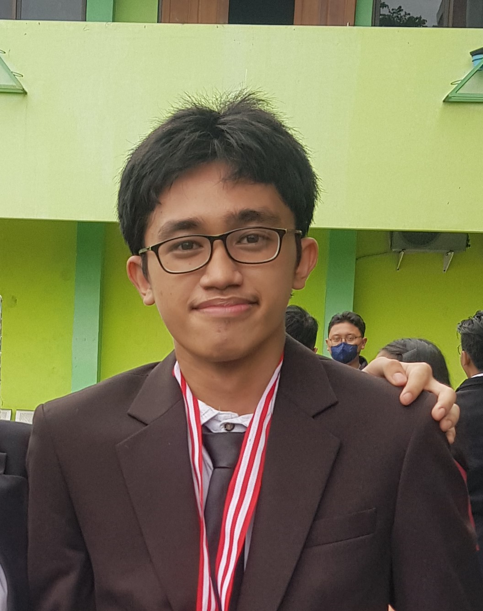
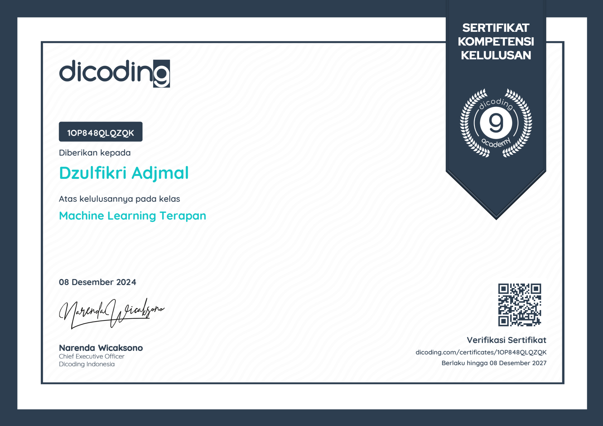
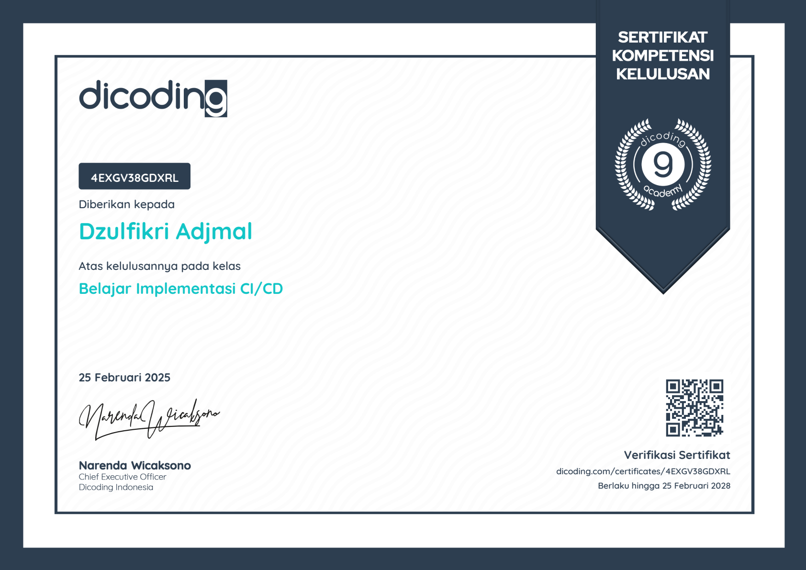
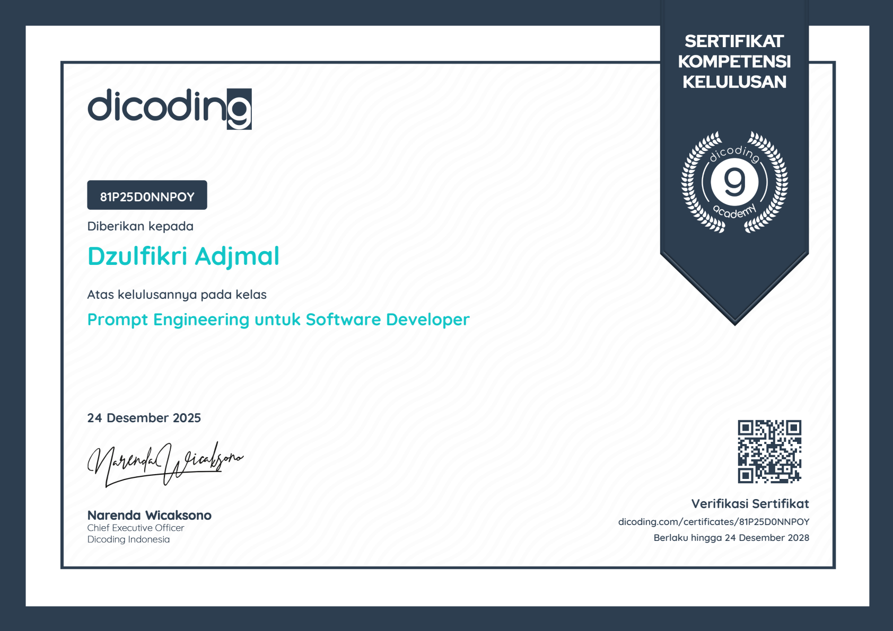
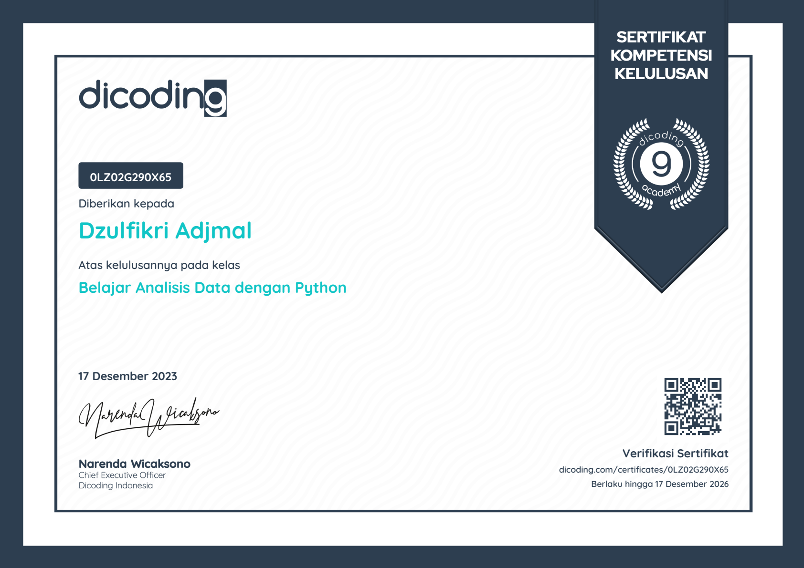

Halo, Saya
Dzulfikri Adjmal
Mahasiswa Informatika UPN "Veteran" Jakarta (IPK 3.90/4.00) spesialisasi Machine Learning, AI, dan MLOps. Berpengalaman merancang end-to-end ML pipelines, mengintegrasikan LLM dengan Model Context Protocol (MCP), serta berkontribusi nyata pada efisiensi sistem di Kementerian Keuangan RI.

Project Unggulan
PDF & Audio Extractor Pipeline
Pipeline ekstraksi teks dokumen PDF dan transkripsi audio berbasis Python untuk memperkaya knowledge base chatbot KMS Chat di Kementerian Keuangan Learning Center.
Smart Hydroponic - IoT & Backend
Layanan Backend API berbasis Python FastAPI untuk menerima telemetry data sensor IoT (suhu, kelembaban, pH, TDS), validasi Pydantic, migrasi Alembic, serta manajemen database time-series di TimescaleDB.
Smart Hydroponic MCP Integration
Server Model Context Protocol (MCP) untuk sistem hidroponik pintar. Memungkinkan LLM Agent memanggil tool otomatis untuk memantau data sensor.
KSM AIoT Bot Ecosystem (Nexo)
Ekosistem AI Discord terpadu (WebHook Gateway dan Agent Orchestrator). Mengintegrasikan Model Context Protocol (MCP) untuk pemanggilan tool eksternal secara dinamis dan automated zero-downtime deployment melalui integrasi dengan WebHook Portainer.
Generative AI & Legal RAG System
Sistem Retrieval-Augmented Generation (RAG) menggunakan fine-tuned Large Language Model (LLM) untuk menjawab pertanyaan berbasis konteks dokumen hukum secara presisi.
MLOps & ML Pipeline
Arsitektur pipeline machine learning menggunakan TensorFlow Extended (TFX) dan Apache Beam (Data Ingestion, Validation, Transformation, serta model serving dengan Railway).
Sertifikasi Profesional (Dicoding)
Koleksi sertifikat kelulusan resmi di bidang Generative AI, Machine Learning, Deep Learning, MLOps, DevOps, & Cloud Computing.
Pengembangan Generative AI Berbasis LLM
- Large Language Model (LLM) & Arsitektur Transformer
- Retrieval Augmented Generation (RAG) System
- Fine-Tuning LLM (PEFT, LoRA, QLoRA)
- AI Agent & Agentic AI (ReAct, CrewAI)
Belajar Fundamental Deep Learning
- Neural Network dengan TensorFlow & Keras
- Natural Language Processing (NLP) & Text Classification
- Image Classification & Computer Vision
- Time Series Analysis (RNN & LSTM)
Machine Learning Operations (MLOps)
- Machine Learning Pipeline (TFX & Apache Beam)
- Data Ingestion, Validation, & Transformation
- Model Evaluation & Cloud REST API Serving
- Continuous Monitoring & System Reliability

Machine Learning Terapan
- Machine Learning System Design & Project Architecture
- Predictive Analytics & Sentiment Analysis
- Sistem Rekomendasi (Content-Based & Collaborative Filtering)
- Computer Vision & Object Detection

Belajar Implementasi CI/CD dengan Jenkins
- Continuous Integration & Automated Testing Pipeline
- Continuous Deployment & Zero-Downtime Server
- Infrastructure Operation & Monitoring
- DevSecOps & Pipeline Security

Prompt Engineering untuk Developer
- Fundamental Prompt Engineering & Generative AI Models
- Pola Prompt Adaptif (Chain-of-Thought, Few-Shot)
- Aplikasi Prompting untuk Optimasi Development

Belajar Analisis Data dengan Python
- Fundamentals of Data Analytics & Descriptive Statistics
- Data Wrangling & Data Cleansing dengan Python
- Exploratory Data Analysis (EDA) & Data Visualization
Belajar Dasar AWS Cloud
- Cloud Computing & AWS Global Infrastructure
- Amazon EC2, S3, DynamoDB, & VPC Networking
- AWS Security, IAM, CloudWatch, & Cost Management
Tentang Saya
Latar belakang pendidikan, statistik, dan kontak profesional.
Biodata & Pendidikan
| Universitas | UPN "Veteran" Jakarta |
|---|---|
| Program Studi | S1 Informatika (Computer Science) |
| IPK / GPA | 3.90 / 4.00 |
| Pengalaman | Ex-Data Science Intern @ Kementerian Keuangan RI |
| dzulfikriadjmal@gmail.com |